ILL / LAYERS
Illustracy
병합된 일러스트를 분석해 편집 가능한 레이어와 PSD로 재구성합니다.
안녕하세요, 연이입니다. 소리와 사진, 창작의 원리를 누구나 사용하기 쉬운 도구로 옮깁니다. 기기는 달라도, 쓰임은 같도록.
프로젝트 살펴보기사진 · 음향 · 창작 · 보안

프로젝트를 골라 앱이나 저장소를 열어 보세요.
병합된 일러스트를 분석해 편집 가능한 레이어와 PSD로 재구성합니다.
컬러 네거티브 스캔을 사진으로 변환하고, 색 균형을 조절하며 여러 장을 내보냅니다.
음원의 마디별 코드와 박을 추정하고, 메트로놈과 합성 피아노로 확인합니다.
아날로그 음색·다이내믹스·공간 효과와 고역 보완을 조절하고 WAV로 내보냅니다.
이미지 상태를 분석해 확대하고, 선형광 보간·윤곽 보정·16비트 PNG 저장을 지원합니다.
브라우저에서 사진에 필름의 색과 입자감을 더하고 결과를 비교합니다.
이미지를 분석하고 시각적 평가로 사진의 특징을 살펴봅니다.
맥북을 위한 브라우저 기반 도난방지 경보 도구입니다.
작은 이미지를 짧은 텍스트로 압축하고 링크로 공유합니다.
요청 뒤에 있는 목적을 이해하고, 작지만 반복되는 불편을 줄입니다. 모든 기능에는 설명할 수 있는 존재 이유가 있어야 합니다.